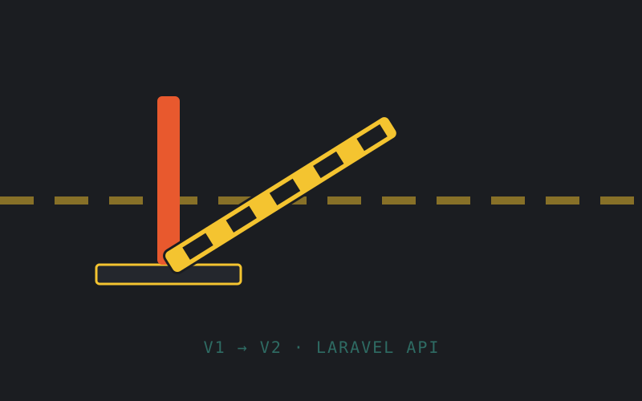

Backend · Seeker Parking · EPS
Migración del módulo de Control de Ingreso desde una arquitectura legacy en CodeIgniter (V1) hacia una API REST en Laravel (V2).

El módulo de Control de Ingreso de Seeker Parking —el que registra el ingreso y egreso de vehículos en playas de estacionamiento y eventos— corría sobre una versión antigua (V1) construida en CodeIgniter. Este proyecto es también el eje de mi anteproyecto de práctica profesional supervisada (EPS): documenté y ejecuté la migración hacia la V2, una API REST en Laravel.
El trabajo giró en torno a cuatro entidades clave: order_tickets (el ticket de estacionamiento), access_logs (registro de accesos), order_ticket_vehicle_changes (cambios de vehículo dentro de un mismo ticket) y order_ticket_comments (comentarios asociados).